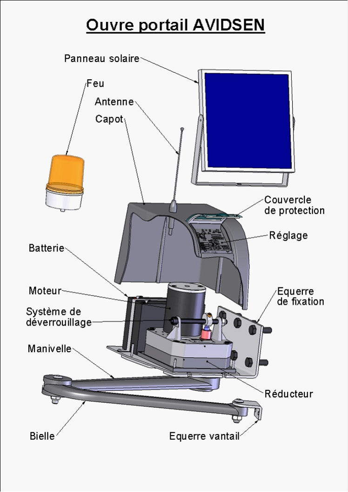

Présentation du système
Dans le secteur de l'habitat, l'automatisation des dispositifs d'accès est en fort développement.

Le système pédagogique proposé par la société SET s'appuie sur un produit innovant, développé par la société Avidsen, destiné à la commande de portails à battants. Ce produit se caractérise par une absence de liaison au réseau électrique basse tension grâce à son alimentation par panneaux photovoltaïques ainsi que par une absence de liaison filaire entre les deux centrales électroniques grâce à la radio-transmission.
ANALYSE FONCTIONNELLE EXTERNE
Expression du besoin fondamental (diagramme "bête à cornes")
De quoi s’agit-il ? D’un ouvre portail
A qui sert-il ? à un utilisateur (automobiliste ou piéton)
Sur quoi agit-il ? Sur les vantaux
Pour quoi faire ? Pour ouvrir ou fermer les vantaux automatiquement
Diagramme des interacteurs simplifié (diagramme "pieuvre")
FP1 : Ouvrir, fermer ou arrêter les vantaux sur demande de l’utilisateur
FP2 : Libérer les vantaux pour une utilisation manuelle (lors du réglage initial ou lors d’une panne)
FP3 : Arrêter les vantaux si l’un d’eux vient en butée ou en contact avec un obstacle (personne ou véhicule)
FC1 : Doit être simple à utiliser
FC2 : Doit s’adapter aux parties fixes (pour la fixation)
FC3 : Doit s’adapter aux vantaux
FC4 : Doit plaire à l’œil
FC5 : Doit être conforme aux normes
FC6 : Doit être indépendant énergétiquement
FC7 : Doit résister au milieu ambiant
FC8 : Doit être facile à installer
Caractérisation des fonctions
Fonctions |
Critères d’appréciation |
Niveau d’appréciation |
Flexi-bilité |
FP1 : Ouvrir, fermer ou arrêter les vantaux sur demande de l’utilisateur
|
Longueur de vantaux
Masse de chaque vantail Matière des vantaux Ouverture des vantaux Autonomie
Temps d’ouverture moyen (course = 90°) Portée de la télécommande en champ libre |
Mini : 1 mètre Maxi : 2 mètres 150 kg maxi Aluminium, fer, bois, PVC 120° maxi vers l’intérieur ou l’extérieur L’autonomie du système est « permanente » même avec un faible taux d’ensoleillement ( − de 20 cycles/jours). L’autonomie dépend de la durée de vie de la batterie (entre 5 et 8 ans) 20s Env. 50m (la portée est réduite en présence d’obstacles : pilier, voiture, pare-brise métallisé) |
F1 F1 F0 F2 F0 F0
F1 F1 |
FP2 : Libérer les vantaux pour une utilisation manuelle (lors du réglage initial ou lors d’une panne) |
Débrayer les motorisations à l’aide de la clé |
Effort normal |
F1 |
FP3 : Arrêter les vantaux si l’un d’eux vient en butée ou en contact avec un obstacle (personne ou véhicule) |
Effort dynamique à 1m Force statique après 5s à 1m
|
< 400N < 25N
|
F0 F0 |
FC1 : Doit être simple à utiliser
|
Télécommande : Pour ouvrir, arrêter ou fermer le portail. Pour ouvrir, arrêter ou fermer uniquement le battant 1 (celui qui s’ouvre en premier), fonction passage piéton Possibilité d’ajouter un clavier à code ou un interrupteur à clé |
Appuyer sur le bouton en haut à gauche de la télécommande programmée Appuyer sur le bouton en haut à droite de la télécommande |
F1
|
FC2 : Doit s’adapter aux parties fixes (pour la fixation)
|
Six trous à réaliser dans chaque pilier pour fixer le support de motorisation |
6 Trous diam 8 |
F0 |
FC3 : Doit s’adapter aux vantaux |
Deux trous à réaliser dans chaque vantail pour fixer une équerre |
2 Trous diam 8 |
F0 |
FC4 : Doit plaire à l’œil
|
Formes et couleurs |
Agréables et bonne tenue au viellissement |
F3 |
FC5 : Doit être conforme aux normes
|
Feu clignotant
Vitesse maximale
Zone de dégagement |
Il s’allume 5 secondes avant le mouvement du vantail et s’éteint 3 secondes après la fin du mouvement du vantail. Pour avoir une zone de danger la plus petite possible, la vitesse maximale doit être inférieure à 0,5 m/s 510mm mini pour un angle d’ouverture de 90° 630mm mini pour un angle d’ouverture de 120° |
F0
F0
F0 |
FC6 : Doit être indépendant énergétiquement
|
Un panneau photovoltaïque par motorisation.
Une batterie par motorisation
Durée de vie Tension des batteries |
Caractéristiques : Unom = 17V Pnom = 4W
Permet un fonctionnement de 10cycles/jour sans soleil pendant une durée « normale » sous nos latitudes. 5 ans 12V |
F0 F2
F1
F2 F0 |
FC7 : Doit résister au milieu ambiant |
Capot de protection Système_ bielle-manivelle et fixations |
Indice de protection IP44 et résistant aux ultraviolets Peinture de protection |
F0 F0 |
FC8 : Doit être facile à installer |
Durée du montage
|
1 heure voir manuel d'installation pages 5 à 27 |
F1
|
Created with the Personal Edition of HelpNDoc: Produce electonic books easily